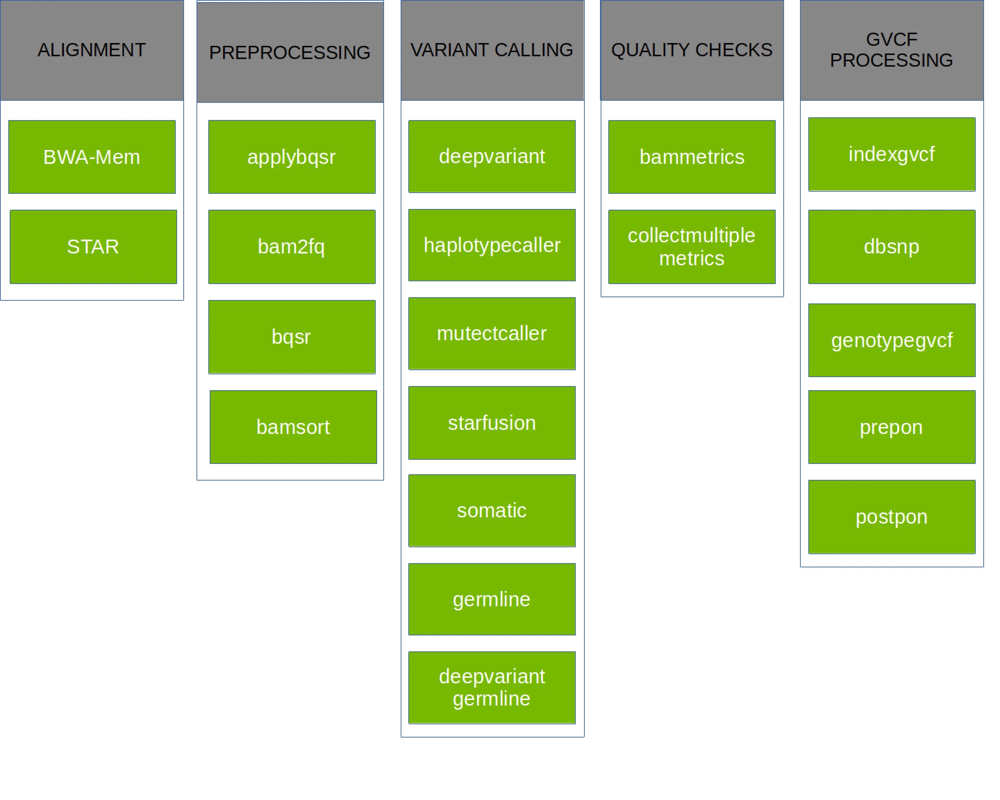

Parabricks on BCP Workshop¶
This course introduces NVIDIA Clara™ Parabricks® for read alignment and variant calling to demonstrate the benefits of GPU acceleration.
Last updated 7/18/2024
Course objectives¶
As DNA sequencing has decreased in price, experiments have often been designed to use deeper coverage or more samples. This means more data is being produced and more time is spent on the bioinformatics analysis. CPU-based tools are commonly used for both read alignment and variant calling. However, significant time can be saved when GPU-accelerated tools are used. This will be demonstrated with NVIDIA Parabricks with the following steps:
DNA alignment with fq2bam
Calling variants with haplotypeCaller
Potential downstream analyses
This tutorial will show you how to run our core alignment tool, FQ2BAM, which allows you to align a FASTQ file according to GATK best practices at blazing speeds. This includes the gold-standard alignment tool BWA-MEM with inbuilt co-ordinate sorting of the output file, and optionally application of base-quality-score-recalibration and marking of duplicate reads.
Requirements¶
NVIDIA GPU and driver greater than version 465.32.*
Docker for building containers
Base Command Platform for running the container on DGX Cloud
Introduction to Clara Parabricks¶
NVIDIA Clara™ Parabricks® is a software suite for the secondary analysis (alignment, variant calling) of DNA and RNA from short and long reads on GPU-accelerated hardware. On the most performant platforms, Clara Parabricks can analyze a typical whole human genome dataset in about 25 minutes, instead of 30 hours for other methods. It was designed to be easy to run while also matching the output from commonly used software, which means analyses can be reproduced even without GPUs.

Parabricks v4 supports a variety of GPU-accelerated secondary analyses: alignment, preprocessing, variant calling, QC, and even some variant annotation (which lies in tertiary analysis). The chart below shows each pipeline supported in Parabricks v4.2.0-1, but take a look at the documentation for more information.
Getting Clara Parabricks¶
Clara Parabricks is available as a container on NGC.
https://catalog.ngc.nvidia.com/orgs/nvidia/teams/clara/containers/clara-parabricks
This tutorial will be using v4.3.1-1 of the container, and it can be pulled to your system as follows:
# Docker
docker pull nvcr.io/nvidia/clara/clara-parabricks:4.3.1-1
We’ll also be using the CPU version of tools in Parabricks for performance comparisons, so I recommend incorporating them into the Parabricks container with the following Dockerfile.
FROM nvcr.io/nvidia/clara/clara-parabricks:4.3.1-1
ENV DEBIAN_FRONTEND=noninteractive
RUN echo "#!/bin/bash\n\
apt-get clean\n\
[ -x \"\$(command -v conda)\" ] && conda clean -tipsy\n\
for dir in /tmp/* /var/tmp/* /home/jupyter/{.ccache,.cache/pip,conda-bld,.conda} /root/* /root/\.[^\.]* /var/lib/apt/lists/* /var/log/*; do\n\
[ -e \$dir ] && rm -rf \$dir || true\n\
done" > /usr/bin/docker-clean && chmod a+rx /usr/bin/docker-clean && docker-clean
# Install dependencies
RUN apt-get update \
&& apt-get install -yq --no-install-recommends \
unzip wget bzip2 ca-certificates git curl vim-nox less xterm \
&& docker-clean
# Add conda env variables
ENV MINICONDA_VERSION=py38_23.3.1-0 \
CONDA_DIR=/opt/conda
ENV PATH=${CONDA_DIR}/bin:${PATH}
# Download and install miniconda
RUN mkdir $CONDA_DIR && chmod -R a+rX $CONDA_DIR \
&& wget --quiet https://repo.continuum.io/miniconda/Miniconda3-${MINICONDA_VERSION}-Linux-x86_64.sh \
&& bash Miniconda3-${MINICONDA_VERSION}-Linux-x86_64.sh -f -b -p $CONDA_DIR \
&& rm Miniconda3-${MINICONDA_VERSION}-Linux-x86_64.sh \
&& conda config --system --set auto_update_conda false \
&& conda config --system --set show_channel_urls true \
&& conda update -n base conda \
&& conda update --all --quiet --yes \
&& rm -rf ${CONDA_DIR}/pkgs/* \
&& docker-clean
# Activate conda on login
RUN ln -s /opt/conda/etc/profile.d/conda.sh /etc/profile.d/conda.sh
#https://docs.nvidia.com/clara/parabricks/4.2.0/documentation/tooldocs/compatiblecpusoftwareversions.html
RUN conda install -n base -c conda-forge mamba \
&& docker-clean
RUN mamba install -y -n base -c conda-forge -c bioconda 'seqtk=1.3' 'samtools=1.16.1' 'gatk4=4.3.0.0' 'bwa=0.7.15' 'star=2.7.2a' 'star-fusion=1.7.0' \
&& docker-clean
The Dockerfile can be built as follows:
docker build -t nvcr.io/<NGC ORG>/${USER}_parabricks_workshop:4.3.1-1 .
docker push
Note
Make sure your Docker already authenticated to NGC to push the container
Starting Your Parabricks Job¶
After your container is pushed to NGC, make a workspace for parabricks
ngc workspace create --name $(USER)_parabricks
and then start a job on two GPUs for 3 hours as follows:
ngc batch run --total-runtime 3h \
-w $(USER)_parabricks:/workspace:RW \
-n parabricks_workshop \
-i $(CONTAINER) \
-in dgxa100.80g.2.norm \
--result /result \
-c 'sleep 3h'
Data Used¶
This tutorial will be using paired-end reads from the TDr-7 strain of Arabidopsis thaliana from the 1001 Genomes project
The A. thaliana reference genome, TAIR10, with “Chr” removed from chromosome names to match naming convention used by 1001 Genomes project.
# Download reference
curl https://www.arabidopsis.org/download_files/Genes/TAIR10_genome_release/TAIR10_chromosome_files/TAIR10_chr_all.fas.gz | zcat | sed -e "s/^>Chr/>/" > TAIR10_chr_all.fasta
# Index with samtools
samtools faidx TAIR10_chr_all.fasta
The SNPmatch database for the 1001 Genomes Project.
All downloads can be performed by running download_data.sh
DNA alignment with fq2bam¶
Unless you’re starting with pre-aligned reads in a .bam file, the first step to many bioinformatics pipelines is alignment. Parabricks has the fq2bam pipeline for DNA (based on bwa mem) and the rna_fq2bam pipeline for RNA (based on STAR). This tutorial uses DNA inputs and will focus on fq2bam.
When fq2bam is run, reads (compressed or not) are aligned by GPU-bwa mem, alignments are sorted by coordinate, duplicates are marked, and Base Quality Score Recalibration (BQSR) is performed, and a final .bam file is output.

Depending on how you need to process your sample, fq2bam has a lot of options. Since the data used in this tutorial is paired-end, we’re going to be using:
--ref REF Path to the reference file. (default: None)
--in-fq [IN_FQ [IN_FQ ...]]
Path to the pair-ended FASTQ files followed by optional read groups with quotes
--out-bam OUT_BAM Path of a BAM/CRAM file after Marking Duplicates. (default: None)
--num-gpus NUM_GPUS Number of GPUs to use for a run. (default: number detected)
Indexing the reference for fq2bam¶
Parabricks does require the the reference genome be indexed with bwa before it can run fq2bam. This function was not ported to GPU, so you’ll need to run this with the CPU version of the code.
bwa index TAIR10_chr_all.fasta
Note
For the sake of time, the reference genome we’ll be using was already indexed. This will need to be done for any other genomes you use.
Running fq2bam on one GPU¶
By default, Parabricks will use all GPUs detected on your system. However, that can be controlled with the --num-gpus flag. Lets start with one and see how things run.
#!/bin/bash
REF=input_files/TAIR10_chr_all.fasta
TDR_1=input_files/TDr-7_10M_R1.fastq
TDR_2=input_files/TDr-7_10M_R2.fastq
# Align TDr-7 reads
time pbrun fq2bam --ref $REF --in-fq $TDR_1 $TDR_2 --out-bam TDr-7_10M_pb.bam --num-gpus 1
Running fq2bam on two GPUs¶
Now run the same pipeline on two GPUs. If you only requested a single GPU through your scheduler, you may need to start a new job.
Is there a larger effect on certain phases?
Running the CPU equivalent¶
For every workflow in Clara Parabricks, an equivalent CPU workflow is provided to reproduce results. fq2bam is no exception, and the below example takes those commands and wraps them in a bash function.
#!/bin/bash
#https://docs.nvidia.com/clara/parabricks/4.0.1/documentation/tooldocs/compatiblecpusoftwareversions.html
REF=input_files/TAIR10_chr_all.fasta
TDR_1=input_files/TDr-7_10M_R1.fastq
TDR_2=input_files/TDr-7_10M_R2.fastq
# Number of threads for GATK to use
OMP_NUM_THREADS=8
function fq2bam_pe {
# https://docs.nvidia.com/clara/parabricks/4.0.1/documentation/tooldocs/man_fq2bam.html#man-fq2bam
REF=$1; FQ1=$2; FQ2=$3; PREFIX=$4
# Align and sort reads
bwa mem -t 32 -K 10000000 \
-R '@RG\tID:sample_rg1\tLB:lib1\tPL:bar\tSM:sample\tPU:sample_rg1' \
$REF $FQ1 $FQ2 | gatk SortSam \
--java-options -Xmx30g --MAX_RECORDS_IN_RAM 5000000 \
-I /dev/stdin -O ${PREFIX}_sorted.bam --SORT_ORDER coordinate
# Mark duplicates
gatk MarkDuplicates --java-options -Xmx30g \
-I ${PREFIX}_sorted.bam \
-O ${PREFIX}_sorted_marked.bam \
-M ${PREFIX}_metrics.txt
rm ${PREFIX}_sorted.bam
# Index the bam file
samtools index ${PREFIX}_sorted.bam
}
# Align Bay-0 reads
time fq2bam_pe $REF $TDR_1 $TDR_2 TDr-7_10M_cpu
# Each took about 8 minutes to run on 16 CPUs
If you compare the size of the .bam files created by Parabricks and the CPU pipeline, you’ll notice that the CPU pipeline are larger.
$ ls -lh *bam
-rw-rw-r-- 1 u.gz28467 u.gz28467 1.6G Mar 7 01:48 TDr-7_10M_cpu_sorted_marked.bam
-rw-rw-r-- 1 u.gz28467 u.gz28467 1.4G Mar 7 01:35 TDr-7_10M_pb.bam
This is due to compression levels. If you compare the bam files with samtools, they contain the same number of alignments.
$ samtools flagstat TDr-7_10M_pb.bam
20022096 + 0 in total (QC-passed reads + QC-failed reads)
20000000 + 0 primary
0 + 0 secondary
22096 + 0 supplementary
3608170 + 0 duplicates
3608170 + 0 primary duplicates
19033358 + 0 mapped (95.06% : N/A)
19011262 + 0 primary mapped (95.06% : N/A)
$ samtools flagstat TDr-7_10M_cpu_sorted_marked.bam
20022096 + 0 in total (QC-passed reads + QC-failed reads)
20000000 + 0 primary
0 + 0 secondary
22096 + 0 supplementary
3608170 + 0 duplicates
3608170 + 0 primary duplicates
19033358 + 0 mapped (95.06% : N/A)
19011262 + 0 primary mapped (95.06% : N/A)
Optional Exercises¶
Have you tried using a different number of GPUs?
What was the speedup when using a GPU?
What happens if your input reads are compressed?
Are the reads the same if you view them?
Calling Variants with haplotypeCaller¶
The Parabricks haplotypeCaller is a re-implementation of the GATK HaplotypeCaller, which is used to call germline (inherited) SNPs and indels through the local re-assembly of haplotypes and identify genotypes.
Like humans, A. thaliana is diploid and has two copies of each chromosome, so at any given location across the genome, all aligned bases are the same (homozygous), or about half of the reads have one base and half have another (heterozygous). The chloroplast (C) is haploid, similar to the sex chromosomes in humans, and cannot be heterozygous.

Similar to fq2bam, the haplotypeCaller pipeline in Parabricks has many options, but we’ll only need to use these:
- --ref REF
Path to the reference file. (default: None)
- --in-bam IN_BAM
Path to the input BAM/CRAM file for variant calling. The argument may also be a local folder containing several bams; each will be processed by 1 GPU in batch mode. (default: None)
- --out-variants OUT_VARIANTS
Path of the vcf/g.vcf/gvcf.gz file after variant calling. The argument may also be a local folder in batch mode. (default: None)
- --num-gpus NUM_GPUS
Number of GPUs to use for a run. (default: number detected)
Indexing the reference for haplotypeCaller¶
Parabricks does require the the reference genome be indexed with gatk CreateSequenceDictionary and samtools faidx before it can run haplotypeCaller. This function was not ported to GPU, so you’ll need to run this with the CPU version of the code.
gatk CreateSequenceDictionary -R TAIR10_chr_all.fasta; samtools faidx TAIR10_chr_all.fasta
Note
For the sake of time, the reference genome we’ll be using was already indexed. This will need to be done for any other genomes you use.
Running haplotypeCaller¶
HaplotypeCaller takes the .bam files created by fq2bam as input, and calls variants on the aligned reads.
#!/bin/bash
REF=input_files/TAIR10_chr_all.fasta
TDR_BAM=TDr-7_10M_pb.bam
# Call variants on TDr-7 bam file
time pbrun haplotypecaller --ref $REF --in-bam $TDR_BAM --out-variants TDr-7_10M_pb.vcf
Note
Alternatively, both fq2bam and haplotypeCaller can be run with the germline pipeline.
Running the CPU equivalent¶
The CPU equivalent of haplotypeCaller only requires a single call to GATK, but it’s much more time intensive than the Parabricks version. Once again, the commands have been wrapped in a bash function for easy usage.
#!/bin/bash
REF=input_files/TAIR10_chr_all.fasta
TDR_BAM=TDr-7_10M_pb.bam
# Number of threads for GATK to use
OMP_NUM_THREADS=8
function haplo_se {
REF=$1; BAM=$2; PREFIX=$3
gatk HaplotypeCaller \
--java-options -Xmx30g \
--input $BAM \
--output ${PREFIX}_cpu.vcf \
--reference ${REF} \
--native-pair-hmm-threads 16
}
# Call variants on TDr-7 bam file
time haplo_se $REF $TDR_BAM TDr-7_10M
Optional Exercises¶
Run the germline pipeline
How much is runtime affected by the number of GPUs?
Try running DeepVariant
Genotyping sample¶
Now that we have a .vcf file of all variants, we’re ready to perform some “tertiary” analyses. One common one is sample identification based on genotype. In humans, your specific alleles, or variants, could be used to determine your ancestry. In plants, you could determine what variety of a crop you sequenced.
For our example, we’re going to verify the identity of the sample we’ve been working with. The 1001 Genomes project actually has a web portal called AraGeno for identifying samples based on the called SNPs, but we’re going to run SNPmatch manually.
#!/bin/bash
VCF=TDr-7_10M_pb.vcf
RM=input_files/1001genomes_snp-short-indel_only_ACGTN.BIALLELIC.hdf5
CM=input_files/1001genomes_snp-short-indel_only_ACGTN.BIALLELIC.acc.hdf5
snpmatch inbred -i $VCF -d $RM -e $CM -o TDr-7_10M_pb_snpmatch
This will then create a .matches.json file, which will have an accession ID. Find this ID in the 1001 Genomes accessions list and see if it matches TDr-7.
Optional Exercises¶
Try genotyping another sample from HERE
Run your own data
Next Steps¶
Try the RNA-seq pipelines:
Register for NVIDIA Deep Learning Institutes:
Other packages for genomics analyses:
Rapids_singlecell: A GPU-accelerated tool for scRNA analysis.
RAPIDS: GPU accelerated data science
Metacache-GPU: memory efficient, fast & precise taxnomomic classification system for metagenomic read mapping
BioNeMo Geneformer: inferencing for single cell downstream tasks